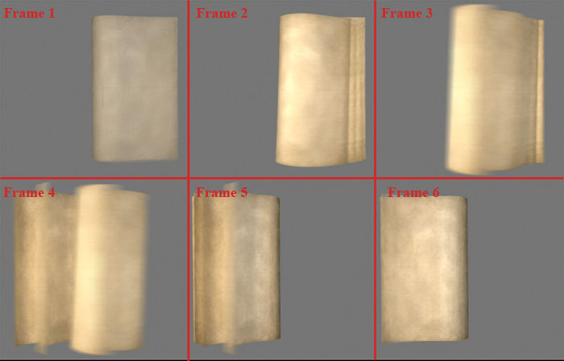

The AnimatedImage automates flip-book style animations.
| AnimatedImage | The AnimatedImage automates flip-book style animations. |
| Implementation Details | The AnimatedImage automates change the texture coordinates for a given texture to produce a flip-book style animation. |
| XML Definition | This is the AnimatedImage xml definition. |
| XML Tag | |
| Optional Attributes | These are optional. |
| texture | Name of the Ui Texture to display. |
| mirrorTexCoords | Allows you to display a horizontal mirror image of the texture. |
| textureScale | The scale of the texture to be used for the image artwork. |
| The textureScale parameter will be ignored if you explictly set the texture dimensions | with the the TexDims elementfunction. |
| filtering | Allows you to specify the blend mode used for this texture when rendering. |
| fps | The frames per second at which to play the animation |
| Elements | |
| AnimFrames | The coordinate infromation for each frame in the animation. |
| TexDims | The explicit texture dimenions to use for each frame, regardless of it’s size. |
| Functions | |
| Functions | |
| AnimatedImageSetTexture() | Sets the texture displayed on this image. |
| AnimatedImageStartAnimation() | Starts playing this animation according to the parameters. |
| AnimatedImageStopAnimation() | Stops an active animation. |
| AnimatedImageSetPlaySpeed() | Sets the speed (fps) at which to play the animation. |
The AnimatedImage automates change the texture coordinates for a given texture to produce a flip-book style animation.
Below is an example set of frames for a book page flipping animation.

This is the AnimatedImage xml definition.
| XML Tag | |
| Optional Attributes | These are optional. |
| texture | Name of the Ui Texture to display. |
| mirrorTexCoords | Allows you to display a horizontal mirror image of the texture. |
| textureScale | The scale of the texture to be used for the image artwork. |
| The textureScale parameter will be ignored if you explictly set the texture dimensions | with the the TexDims elementfunction. |
| filtering | Allows you to specify the blend mode used for this texture when rendering. |
| fps | The frames per second at which to play the animation |
| Elements | |
| AnimFrames | The coordinate infromation for each frame in the animation. |
| TexDims | The explicit texture dimenions to use for each frame, regardless of it’s size. |
These are optional. You can use whichever apply to the Animated you are creating.
Allows you to display a horizontal mirror image of the texture. This swaps the topleft and bottom left coordinates with those used for the topright and bottomright of the image.
A boolean value.
| ”true” | Mirror the texture coords |
| ”false” | Use normal texture coordinates |
The scale of the texture to be used for the image artwork. This is multiplied by the image’s <Size> to determine the texture dimensions.
A number value. (1.0 = 100%)
with the the TexDims elementfunction.
Allows you to specify the blend mode used for this texture when rendering.
A boolean value.
| ”true” | Use Bilinear Filter filtering. |
| ”false” | Use Nearest Neighbor filtering. |
The frames per second at which to play the animation
A number value. (1.0 = 1 frame per second)
The coordinate infromation for each frame in the animation.
<AnimFrames>
<AnimFrame id="1" x="0" y="0" />
<AnimFrame id="2" x="342" y="0" />
...
<AnimFrame id="6" x="684" y="328" />
</AnimFrames>
| id | The id # of the frame being defined. |
| x | The x pixel coordinate of the top left of the frame image. |
| y | The y pixel coordinate of the top left of the frame image. |
| x | 0 |
| y | 0 |
The explicit texture dimenions to use for each frame, regardless of it’s size. When this element is included, any textureScale value will be ignored.
<TexDims x="100" y="100" />
| x | The x pixel texture size. |
| y | The y pixel texture size. |
| x | 0 |
| y | 0 |
| Functions | |
| AnimatedImageSetTexture() | Sets the texture displayed on this image. |
| AnimatedImageStartAnimation() | Starts playing this animation according to the parameters. |
| AnimatedImageStopAnimation() | Stops an active animation. |
| AnimatedImageSetPlaySpeed() | Sets the speed (fps) at which to play the animation. |
Starts playing this animation according to the parameters.
| animatedImageName | (string) The name of the AnimatedImage. |
| startFrame | (number) The id number of the frame to begin with. |
| loop | (boolean) Should the animation loop? |
| hideWhenDone | (boolean) Should the animation automatically hide when it finishes (Not to be used when looping)? |
| delay | (number) How long to wait before starting the animation. |
| nil | no return value |
AnimatedImageStartAnimation( animWindow, 0, false, true, 0 )
Stops an active animation.
| animatedImageName | (string) The name of the AnimatedImage. |
| nil | no return value |
AnimatedImageStopAnimation( animWindow )
Sets the speed (fps) at which to play the animation.
| animatedImageName | (string) The name of the AnimatedImage. |
| fpsSpeed | (string) The play speed in frames per second. |
| nil | no return value |
AnimatedImageSetPlaySpeed( "SomeAnimWindow", 12 )